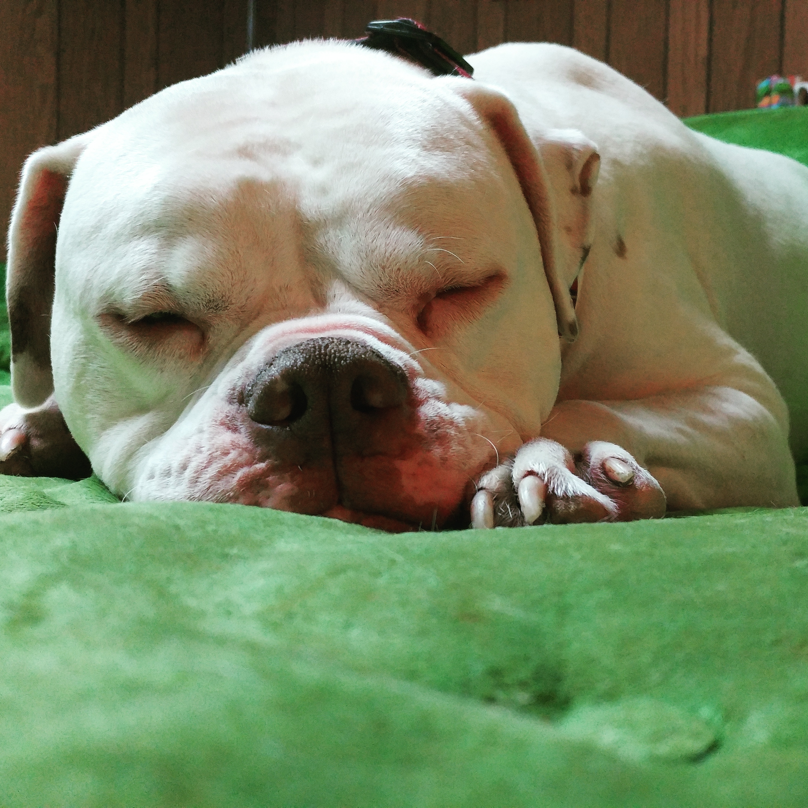
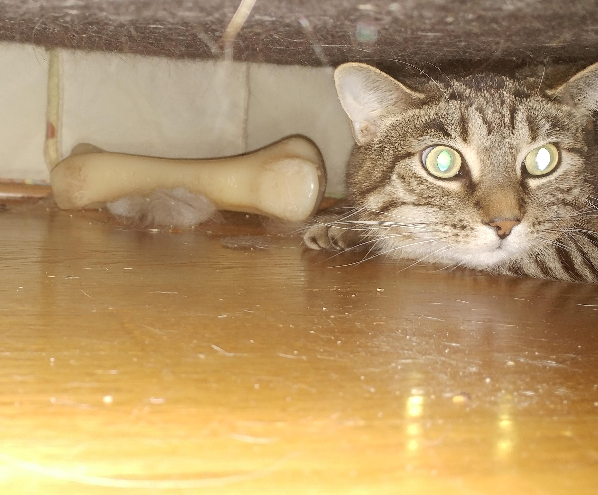
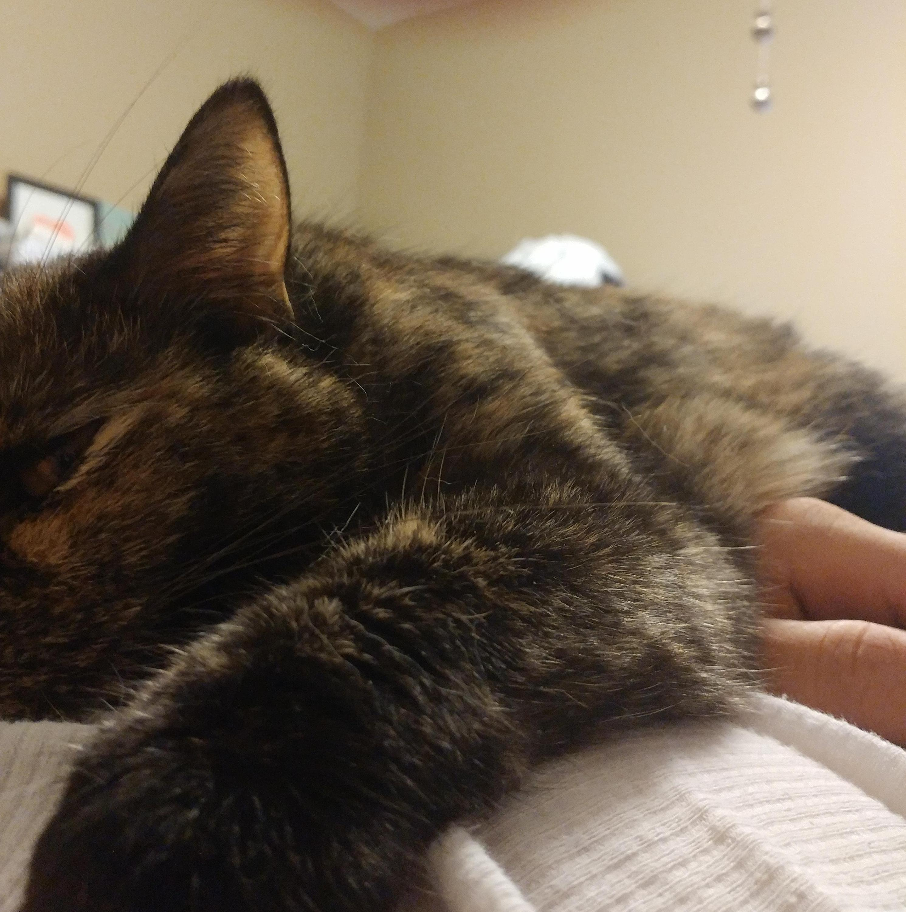
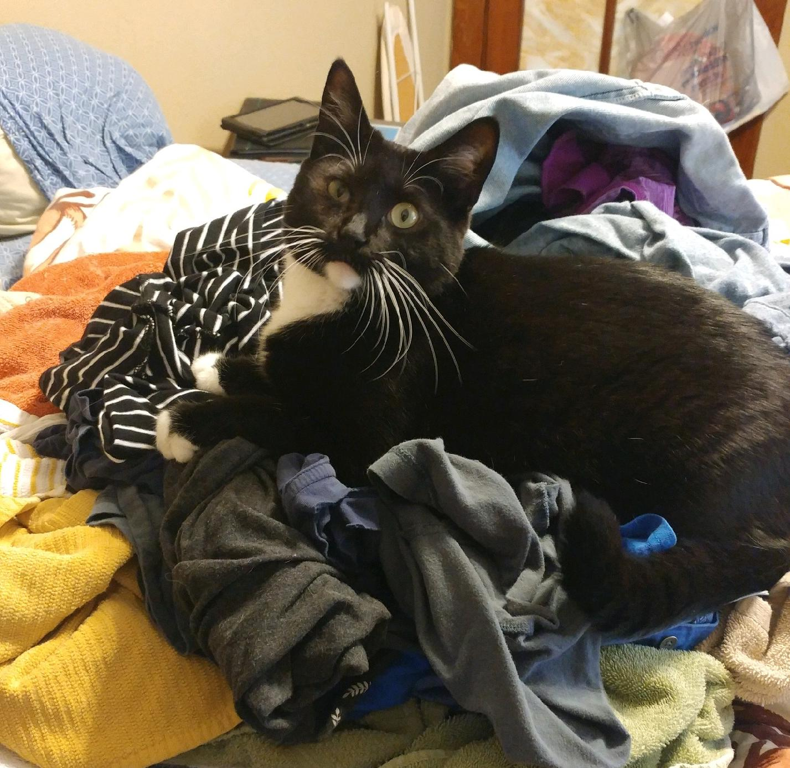
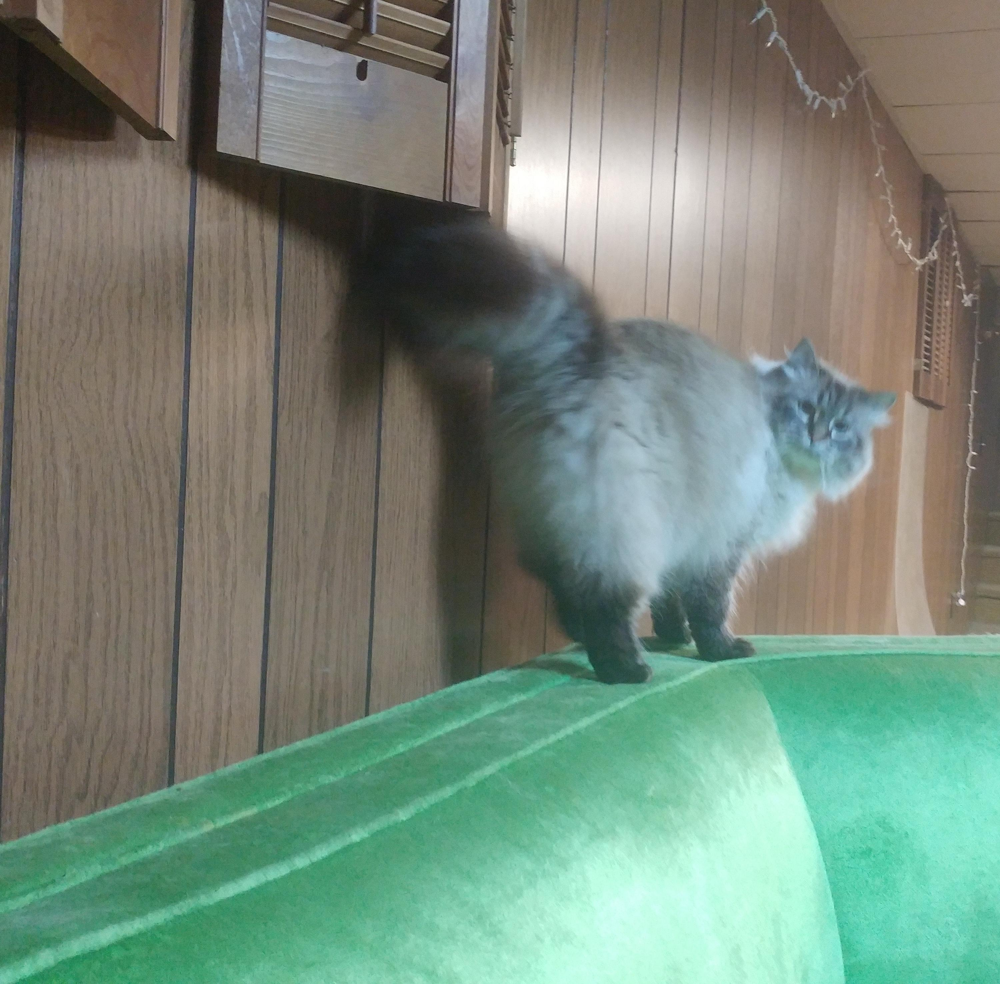
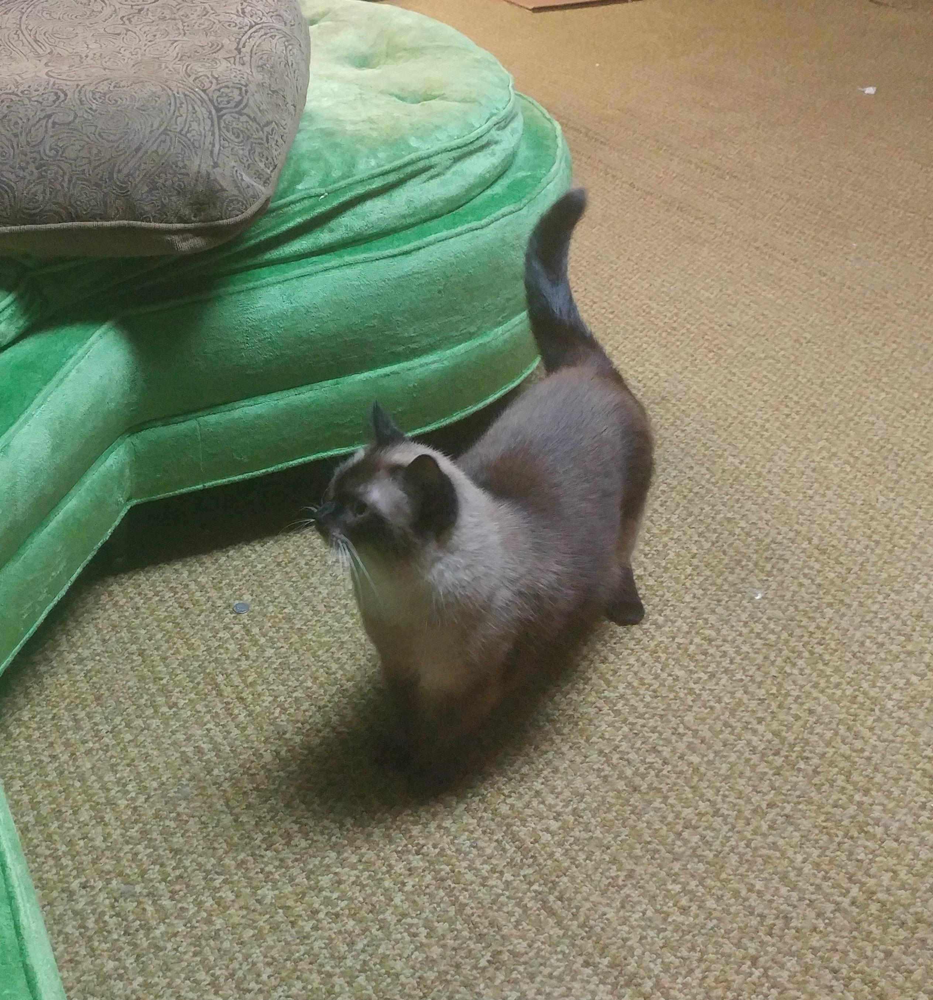

Turk
Turk, also known as Turkington or TurkeyBoneJones, is lord of all pets, and a very good boy. His puppyhood was spent at a shelter on deathrow. He was rescued, thankfully, but life would not be easy for this pup. Turk's primary motivation is food, and was therefore graced with an enormous flapping maw with which to ingest all forms of matter. His digestive tract, however, was not similarly blessed. A treacherous sock lodged itself in little Turk's intestines, and he only barely survived the ensuing surgery that removed 4 inches of his intestine. The surgeon felt his survival was nearly a miracle. This all happened before we met him. We took him in when his previous owner could no longer keep him. He has become part of our family, and is living a very happy life. He likes people, cats, naps, and food. He really, really likes food.
Roman
Roman is our oldest pet. I've heard that at one time he was spritely and affectionate. These days he is portly and cantankerous, and keeps to himself. An anxious cat with a tendency to, um, lose control of his "faculties" during stressful times, Roman has destroyed his fair share of personal property. He also once destroyed my laptop by intentionally kicking a mug of coffee onto it, depriving me simultaneously of internet and caffeine. I have never forgiven him.
His favorite food is Chicken Tikka Masala.
Susan
 Susan is the smart one. She had survived on the street and raised a litter of kids before she ever met us. She is wise, calculating, and deviously smart. A natural escape artist, she has displayed an ability to lay plans and psychological traps to allow for effective escapes. Her most successful escape attempt resulted in her being missing for six months. She was found over a hundred miles away, having somehow managed to cross the Mississippi.
She falls asleep on my chest every night.
Freddie
Freddie is our newest adoption. The runt of a litter of rescue cats, she has a permanent "bad eye" that weeps regularly. This gives her pirate's visage. She is young and super energetic, and plays through most of the day and all of the night. Her fur is super soft, and she is best friends with Turk.
She has an obsession with licking Kae's fingers in the middle of the night. It's the worst.
CW
CW is not our cat. CW is living with us anyway. He owns the basement. Technically, he belongs to my sister, but we have custody of him for the time being. He is pretty and has very very long hair.
I miss my basement.
Zodiac
Another basement-dweller inherited from my sister, this one is up for grabs! Anybody want a cat? I'm not joking. Please. Anyone.